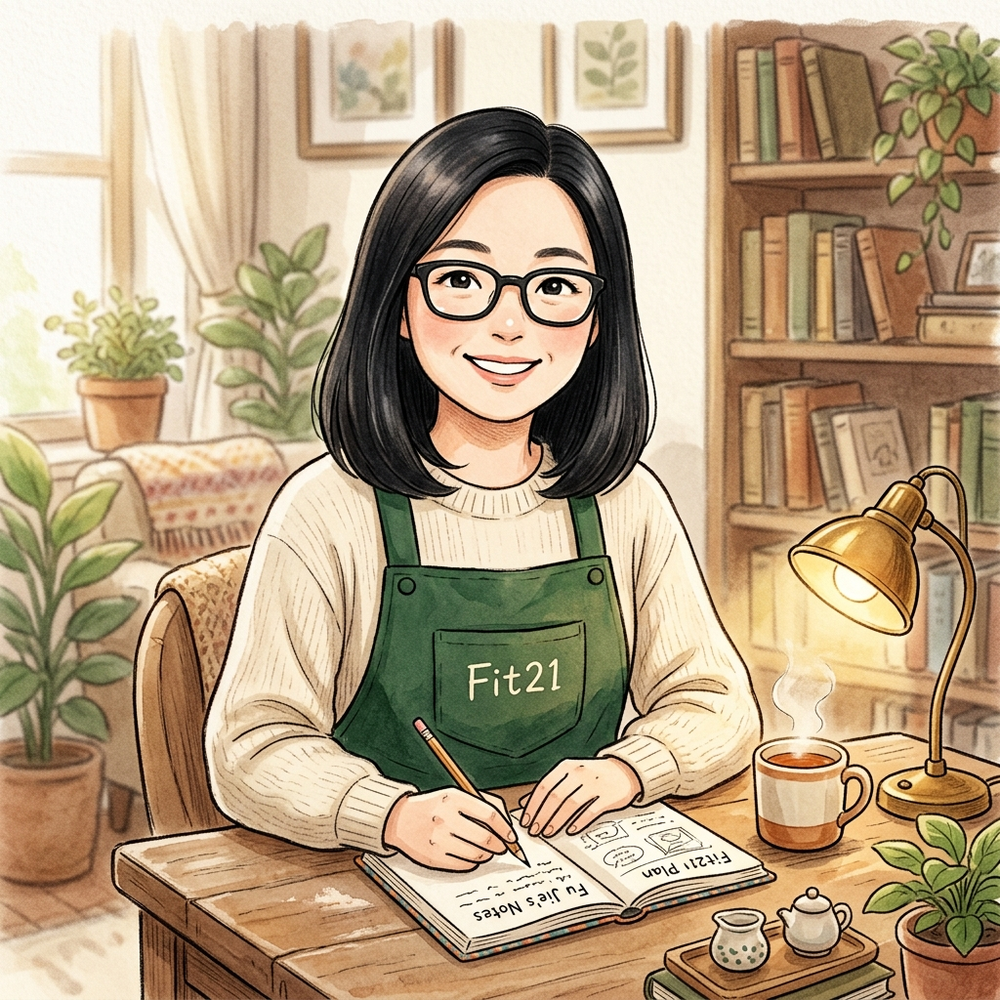

第一次對陌生人開口，緊張很正常。你現在不是要把一個陌生人變成客戶，你只是要完成一次自然的邀請。
先不要想成交，也不用急著介紹 Fit21。回到最單純的事實：你現在唯一的任務，是讓對方知道這裡有一個新口味，可以進來試喝看看。他願意，就自然邀請進店；他不願意，就尊重他的選擇。話說出口，你的任務就完成了，不用替對方做決定。
給自己 10 分鐘，把那些複雜的想法全丟掉：只要找 3 個適合的對象，簡簡單單講這句：
「你好，我們在做新口味試飲，幫我試飲一下好嗎？」
今天的任務不是成交，只是完成 3 次開口。
“我今天練的不是成交，是自然開口的能力。”
你不是等狀態變好才行動；
你正在用行動，讓自己慢慢變得更穩。

想說的話，先留給傅姐。
有些事情不需要立刻找到答案。
如果你願意，可以先把現在的心情或卡住的地方留在這裡。
傅姐看到後，會找一個適合的時間，和你好好聊一聊。
💡 請填寫平常在團隊大家熟悉的稱呼，傅姐認得出來，日後查回信才找得到喔！
傅姐會在合適的時候，為你寫下溫暖回覆或找你聊聊。
你可以先把這段話複製保存，稍後再留給傅姐。
💡 系統已自動為你帶入此手機上次填寫的名字；若是換了手機，請輸入與留言時完全相同的稱呼。
「在這個團隊裡，你不是自己想辦法；
而是有人願意陪你把路看清楚。」